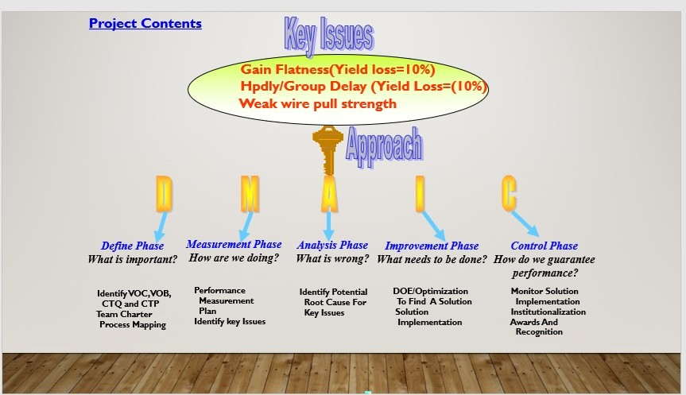

<section style="background:#e9ecef; padding:60px 0;">
  <div class="container">

    <!-- Section Title -->
    <div class="text-center mb-5">
      <h2 class="font-weight-bold">Statistical Engineering Highlights</h2>
      <p class="text-muted">
        Project-based applications of Six Sigma and analytical engineering with real-world impact.
      </p>
    </div>

    <div class="row">

      <!-- LEFT CARD -->
      <div class="col-md-6 mb-4">
        <div class="card shadow-sm border-0 h-100">

          

          <div class="card-body p-4">

            <h4 class="font-weight-bold mb-3">
              1. DMAIC – MHPA18010 NPI QUAL PROJECTS – GREEN BELT
            </h4>

            <p><strong>Project Impact:</strong>
              Improved test yield from 95% to 99% through Cpk improvement (0.97 → 1.8).
            </p>

            <p><strong>Achievement:</strong>
              Applied Fishbone, 5-Why, RSM, DOE and Comparative Methods.
            </p>

            <p><strong>Cost Savings:</strong> $180K/year</p>

            <button class="btn btn-outline-primary btn-sm">🔎 Zoom</button>
            <a href="index.html#expertise" class="ml-3">← Back to Expertise</a>

          </div>
        </div>
      </div>

      <!-- RIGHT CARD -->
      <div class="col-md-6 mb-4">
        <div class="card shadow-sm border-0 h-100">

          

          <div class="card-body p-4">

            <h4 class="font-weight-bold mb-3">
              2. DMADV – MD7IC2050N VDSON Accuracy Improvement (50%)
            </h4>

            <p><strong>Project Impact:</strong>
              Pioneered 4-point Kelvin measurement system.
            </p>

            <p><strong>Achievement:</strong>
              Applied DMADV statistical tools to redesign load board and match curve tracer system.
            </p>

            <p><strong>Cost Savings:</strong> $250K/year</p>

            <button class="btn btn-outline-primary btn-sm">🔎 Zoom</button>
            <a href="index.html#expertise" class="ml-3">← Back to Expertise</a>

          </div>
        </div>
      </div>

    </div>
  </div>
</section>
